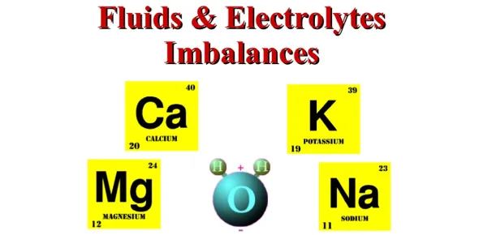

Expanded Nursing Uganda Explanation
Fluid an electrolyte imbalance should be understood beyond a short definition. Link the concept to patient history, focused assessment, common risks, nursing priorities, documentation and evaluation of outcomes.
Contents, 13 sections (tap to expand)
01 FLUID AND ELECTROLYTE IMBALANCE
Fluid and electrolyte balance is a dynamic process that is crucial for life and homeostasis.
02 Electrolytes
Electrolytes in body fluids are active chemicals (cations that carry positive charges and anions that carry negative charges). The major cations in the body fluid are sodium, potassium, calcium, and hydrogen ions. The major anions are chloride, bicarbonate, phosphate, sulphate, and proteinate ions. The chemicals unite in varying combinations. Therefore, electrolyte concentration in the body is expressed in terms of milliequivalents (mEq) per litre. A milliequivalent is defined as being equivalent to the electrochemical activity of 1mg of hydrogen.
Approximately 60% of a typical adult’s weight consists of fluids (water and electrolytes). Factors that influence the amount of body fluid are age, gender, and body fat. In general, younger people have a higher percentage of body fluid than older people, and men have proportionately more body fluid than women. People who are obese have less fluid than those who are thin because fat cells contain little water.
03 FLUID VOLUME DISTURBANCES OR ELECTROLYTE IMBALANCE OR DISORDERS
An electrolyte disorder occurs when the levels of electrolytes in the body are either too high or too low. Electrolytes are naturally occurring elements and compounds in the body. They control important physiologic functions.
04 SODIUM IMBALANCES
Sodium is the most abundant electrolyte in the ECF. Its concentration ranges from 135-145 mEq per litre. Sodium has a major role in controlling water distribution throughout the body because it does not easily cross the cell membrane and because of its abundance and high concentration in the body. Sodium also functions in establishing the electrochemical state necessary for muscle contraction and transmission of nerve impulses.
Hyponatremia refers to a serum sodium level that is less than 135 mEq/L (135mmol/L). Sodium imbalance often occurs with a fluid imbalance because the same hormones regulate both sodium and water balance.
- Poor skin turgor
- Dry mucosa
- Headache
- Decreased saliva production
- Orthostatic fall in blood pressure
- Nausea and vomiting
- Abdominal cramping
- Neurological changes which include: Altered mental status, Status epilepticus, and coma
- Anorexia
- Feeling of exhaustion
- Lethargy
- Confusion
- Muscle twitching
- Hemiparesis
- Focal weakness
- Papilledema
- Seizures and death may occur.
- Excessive diaphoresis
- Diuretics (high ceiling diuretics)
- Wound drainage (especially gastrointestinal)
- Decreased secretion of aldosterone
- Hyperlipidemia
- Kidney diseases (scarred distal convoluted tubule)
- Nothing by mouth
- Low salt diet
- Cerebral salt wasting syndrome
- Hyperglycemia
- RELATIVE SODIUM DEFICITS (DILUTIONAL): Excessive ingestion of hypotonic fluids, fresh water submersion, Kidney failure (nephrotic syndrome), Irrigation with hypotonic fluids, Heart failure.
- When possible, the underlying cause is treated.
- Intravenous infusion of normal saline is used for slow and gradual correction.
- Monitoring therapy can help restore sodium balance in mild Hyponatremia. This includes increasing oral sodium intake and restricting oral fluid intake.
- The nurse’s responsibility for this patient includes skin protection, safety, monitoring, patient and family teaching, and administering prescribed drugs.
Hypernatremia is excess sodium in the blood, in which the serum level is over 145 mEq/L.
ACTUAL SODIUM EXCESSES:
- Hyperaldosteronism
- Kidney failure, Heart failure, Liver failure
- Corticosteroids
- Cushing’s syndrome or disease
- Excessive oral sodium ingestion (salt intake)
- Excessive administration of sodium-containing IV fluids.
RELATIVE SODIUM EXCESSES:
- Nothing by mouth, severe burns
- Increased rate of metabolism
- High fever
- Hyperventilation
- Infection
- Excessive diaphoresis
- Watery diarrhea
- Dehydration.
- Pitting edema
- Puffiness of the face
- Increased urination
- Often dilated jugular veins
- Features of pulmonary oedema
- Body temperature may increase mildly
- A primary characteristic of Hypernatremia is thirst.
- Dry, sticky mucous membranes
- A rough, dry tongue and lethargy which can progress to coma.
Treatment depends on the cause.
- Infusion of a hypotonic electrolyte solution (e.g., 0.3% sodium chloride) or an isotonic non-saline solution (e.g., dextrose 5% in water).
- Diuretics also may be prescribed to treat the sodium gain.
- Nutrition therapy to prevent or correct mild Hypernatremia involves ensuring adequate water intake, especially among older adults.
- Dietary sodium is restricted when kidney problems are present.
- Collaboration with a dietitian to teach the patient how to determine the sodium content of food, beverages, and drugs is important.
- Nursing actions for patient safety include skin protection, monitoring, and patient and family teaching about sodium excess.
05 POTASSIUM IMBALANCES
Potassium is the major cation of the intracellular fluid. It is particularly important for regulating heart function and helps in maintaining healthy nerves and muscles. Almost all foods contain potassium; it is high in meat and fish but less so in eggs, bread, and cereal grains. A deficit of potassium in the blood is called hypokalemia.
Hypokalemia is an electrolyte imbalance in which the serum potassium level is below 3.5 mEq/L. It can be life-threatening because every body system is affected.
- Actual potassium deficits: Inappropriate or excessive use of drugs (e.g., Diuretics, Digitalis, Corticosteroids); Increased secretion of aldosterone; Cushing's syndrome; Diarrhea; Vomiting; Wound drainage (especially gastrointestinal); Prolonged nasogastric suction; Heat-induced excessive diaphoresis; Kidney failure.
- Relative potassium deficits: Alkalosis; Hyperalimentation; Hyperinsulinism; Total parenteral nutrition; Water intoxication; IV therapy with potassium-poor solutions.
- Fatigue, Anorexia, Nausea, and vomiting
- Muscle weakness
- Polyuria, Decreased bowel motility
- Ventricular asystole or fibrillations
- Paresthesias, Leg cramps
- Decreased blood pressure
- Abdominal distention, Hypoactive reflexes
- Conventional measures such as increased intake in the daily diet or oral potassium supplements are good for mild to moderate hypokalemia.
- IV replacement therapy for potassium loss is typically 40-80 mEq/day. Examples include potassium chloride, potassium gluconate, and potassium citrate.
- IV K+ is given for severe loss, and the amount depends on the degree of loss.
- Oral potassium preparations can be taken as liquids or solids.
- Diuretics that increase the kidney's excretion of potassium (e.g., furosemide/Lasix) can cause hypokalemia and should be monitored.
- Nutrition therapy involves collaboration with a dietitian to teach the patient how to increase dietary potassium intake.
- Respiratory monitoring is performed at least hourly for severe hypokalemia; monitor pulse, cough reflex, among others.
Hyperkalemia is an electrolyte imbalance in which the serum potassium level is higher than 5.0 mEq/L. A level above 5.5 mEq/L is considered more severe.
- Over-ingestion of potassium-containing foods or medications (e.g., Salt substitutes, Potassium chloride)
- Crush injury, Burns
- Rapid infusion of potassium-containing IV solution, Bolus IV potassium injections
- Transfusions of whole blood or packed cells
- Adrenal insufficiency, Kidney failure, Addison’s disease
- Potassium-sparing diuretics, Angiotensin-converting enzyme inhibitors (ACEIs)
- Tissue damage, Acidosis, Hyperuricemia, Uncontrolled diabetes mellitus
- Muscle weakness, twitching, palpitations
- Bradycardia, Hypotension
- Tingling and burning sensations followed by numbness in the hands and feet
- Increased motility with diarrhea and hyperactive bowel sounds; bowel movements are frequent and watery
- Flaccid paralysis, Paresthesias, Intestinal colic, Cramps, Abdominal distension
- Irritability, Anxiety
- In non-acute situations, restricting dietary potassium and potassium-containing medications may correct the imbalance.
- Administration of cation-exchange resins (e.g., sodium polystyrene sulfonate) orally or as retention enemas.
- If serum potassium levels are dangerously elevated, it may be necessary to administer IV calcium gluconate with caution.
- Monitor blood pressure to detect hypotension.
- IV administration of regular insulin and a hypertonic dextrose solution causes a temporary shift of potassium into cells.
- Loop diuretics such as furosemide (Lasix) increase the excretion of potassium.
- Beta-2 agonists such as Albuterol (Ventolin) can be effective in decreasing potassium.
- The nurse must caution the patient about using salt substitutes sparingly if they are taking other supplementary forms of potassium.
- Observe the patient's general condition, vital signs, and GI symptoms.
- Prevention includes avoiding potassium-rich foods if prescribed and checking labels of beverages for high potassium content.
06 CALCIUM IMBALANCES
More than 99% of the body’s calcium (Ca++) is located in the skeletal system, where it is a major component of bones and teeth. It is a divalent cation that exists in both a bound form (attached to serum proteins like albumin) and an ionized (free) form. The body functions best when calcium levels are maintained between 9.0 and 10.5 mg/dL. Calcium enters the body via dietary intake, and its absorption requires active vitamin D. It is a vital mineral used to stabilize blood pressure, control skeletal muscle contraction, and build strong bones and teeth.
Hypocalcemia is an electrolyte imbalance in which the total serum calcium (Ca2+) level is below 9.0 mg/dL or 2.25 mmol/L.
- Actual calcium deficits: Inadequate oral intake of calcium, Lactose intolerance, Malabsorption (e.g., Celiac, Crohn's), Inadequate intake of vitamin D, End-stage kidney disease, Steatorrhea, Wound drainage, Hypoparathyroidism, Pancreatitis, Massive subcutaneous infections, Massive transfusions of citrated blood, Chronic diarrhea, Burns, Alcoholism.
- Relative calcium deficits: Hypoproteinemia, Alkalosis, Immobility, Removal of the parathyroid gland.
- Numbness and tingling of fingers
- Positive Trousseau's sign and Chvostek's sign
- Seizures, Bronchospasms
- Anxiety, Impaired clotting time
- Diarrhea, Anorexia, Nausea, and vomiting
- Abdominal distention and pain are common
- Acute symptomatic hypocalcemia is life-threatening and requires prompt treatment with IV administration of calcium salts (e.g., calcium gluconate, calcium chloride).
- Vitamin D therapy may be instituted to increase calcium absorption from the GI tract.
- Calcium-containing foods include milk products, green leafy vegetables.
- Aluminum hydroxide or calcium acetate may be prescribed to decrease elevated phosphorus levels before treating hypocalcemia.
- Educate the patient about foods rich in calcium and the potential need for supplements.
- Advise the patient to reduce alcohol and caffeine intake and to stop smoking, as these can inhibit calcium absorption or increase its excretion.
Hypercalcemia is an electrolyte imbalance in which the total serum calcium level is above 10.5 mg/dL or 2.62 mmol/L. The excitable tissues most affected are the heart, skeletal muscles, nerves, and intestinal smooth muscles.
- Actual calcium excesses: Excessive oral intake of calcium, Excessive oral intake of vitamin D, Kidney failure, Use of Thiazide diuretics, Malignancies (e.g., leukemia), Hyperparathyroidism, Paget’s disease, Prolonged immobilization.
- Relative calcium excess: Use of glucocorticoids, Dehydration, Digoxin toxicity.
- Increased heart rate and blood pressure
- Cyanosis and pallor
- Muscular weakness, Hypoactive deep tendon reflexes
- Constipation, Anorexia, Nausea, and vomiting
- Polyuria and polydipsia, Dehydration
- Lethargy, Deep bone pain, Pathologic fractures
- Flank pain, Calcium stones, Hypertension
- Treating the underlying cause is essential (e.g., chemotherapy, parathyroidectomy).
- Discontinue IV solutions or oral drugs containing calcium or vitamin D.
- IV normal saline (0.9% sodium chloride) is given to increase kidney excretion of calcium.
- Thiazide diuretics are replaced with diuretics that enhance calcium excretion, such as furosemide (Lasix).
- Administer drugs that inhibit calcium reabsorption from bone, such as phosphorus, calcitonin, and prostaglandin synthesis inhibitors (aspirin, NSAIDs).
- Implement cardiac monitoring for patients with hypercalcemia.
07 PHOSPHORUS IMBALANCES
Normal serum level of phosphorus ranges from 3.0 to 4.5 mg/dL. It is essential to the function of muscles and red blood cells, the formation of ATP, and maintaining acid-base balance. It also provides structural support to bones and teeth.
Hypophosphatemia is an electrolyte imbalance in which the serum phosphorus level is below 3.0 mg/dL. Because phosphorus and calcium are interrelated, a decrease in serum phosphorus can cause an increase in serum calcium.
- Malnutrition, Starvation
- Use of aluminum hydroxide-based or magnesium-based antacids
- Hyperparathyroidism, Hypercalcemia, Kidney failure, Malignancy
- Hyperglycemia, Hyperalimentation, Respiratory alkalosis, Uncontrolled diabetes mellitus
- Alcohol abuse or withdrawal, Vitamin D deficiency, Diarrhea, Burns, and severe wounds
- Paresthesia, Muscle weakness
- Bone pain and tenderness, Chest pain
- Confusion, Cardiomyopathy, Respiratory failure
- Seizures, Tissue hypoxia, Increased susceptibility to infections, Nystagmus
- On laboratory investigation, the serum phosphorus level is less than 2.5mg/dl.
- Discontinue drugs that promote phosphorus loss (e.g., antacids, osmotic diuretics, calcium supplements).
- Oral replacement with phosphorus along with vitamin D may correct moderate deficits.
- IV phosphorus is given cautiously and slowly for severe cases (less than 1 mg/dL).
- Nutrition therapy involves increasing the intake of phosphorus-rich foods while decreasing calcium-rich foods.
Hyperphosphatemia is an electrolyte imbalance in which the serum phosphorus level is above 4.5 mg/dL. High levels are generally well-tolerated by most body systems.
- Certain cancer treatments, Tumor lysis syndrome
- Acute and chronic renal failure
- Excessive intake of phosphorus, Vitamin D excess
- Respiratory and metabolic acidosis
- Hypoparathyroidism, Volume depletion
- Leukemia/lymphoma treatment with cytotoxic drugs
- Increased tissue breakdown, Rhabdomyolysis
- Tetany, Tachycardia
- Anorexia, Nausea, and vomiting
- Signs and symptoms of associated hypocalcemia
- Hyperactive reflexes
- Soft tissue calcifications in lungs, kidneys, heart, and cornea
- Lab analysis shows serum phosphorus level exceeds 4.5mg/dl.
- Management often entails managing the associated hypocalcemia.
- Give Vitamin D orally or parenterally.
- Restrict dietary phosphorus; promote excretion with loop diuretics and volume replacement with saline.
- Dialysis may also lower phosphorus levels.
- Advise the client to avoid phosphate-containing laxatives and enemas.
08 CHLORIDE IMBALANCES
Chloride (Cl-) is the major anion of the ECF. The normal plasma concentration ranges from 98 to 106 mEq/L. It enters the body through dietary intake and is important in the formation of hydrochloric acid in the stomach and in maintaining acid-base balance.
Hyperchloremia exists when the serum level of chloride exceeds 107 mEq/L. Hypernatremia, bicarbonate loss, and metabolic acidosis can occur with high chloride levels.
- Tachypnea, Weakness, and lethargy
- Deep and rapid respirations
- Diminished cognitive ability
- Hypertension; pitting oedema
- Dysrhythmias
- Correcting the underlying cause and restoring electrolyte, fluid, and acid-base balance are essential.
- Ringer's lactate solution may be administered.
- IV sodium bicarbonate may be given to increase bicarbonate levels, which promotes renal excretion of chloride ions.
- Diuretics may be administered to eliminate chloride.
- Monitor vital signs, arterial blood gas values, and patient status.
- Educate the patient about diet and maintaining adequate hydration.
Hypochloremia is a serum chloride level below 97 mEq/L.
- Addison’s disease
- Reduced chloride intake or absorption
- Untreated diabetic ketoacidosis
- Excessive sweating, Vomiting, and nausea
- Gastric suctioning, Diarrhea, Draining fistulas and ileostomies
- Rapid removal of ascitic fluid with high sodium content
- IV fluids that lack chloride (e.g., dextrose and water)
- Agitation, Irritability
- Tremors, Muscle cramps, Hyperactive deep tendon reflexes, Hypertonicity, Tetany
- Slow, shallow respirations
- Seizures, Dysrhythmias, Coma
- Administer IV normal saline (0.9% sodium chloride) or half-strength saline (0.45% sodium chloride).
- If the patient is using a diuretic, it may be discontinued or another one prescribed.
- Nursing care is similar to that for other electrolyte imbalances.
09 MAGNESIUM IMBALANCES
Magnesium (Mg++) is an abundant intracellular cation. The normal serum Mg+ level is 1.3 to 2.3 mg/dL. It is the most abundant intracellular cation after potassium and plays a role in both carbohydrate and protein metabolism. Magnesium balance is important for neuromuscular function, as it acts directly on the myoneural junction. It also affects cardiovascular activity, producing vasodilation. 60% of magnesium is deposited in bone and soft tissues; it is absorbed in the small intestine and excreted by the kidneys.
Hypomagnesemia refers to a below-normal serum magnesium concentration (<1.3 mg/dL) and is frequently associated with hypokalemia and hypocalcemia.
- Chronic alcoholism, Malabsorptive disorders
- Hyperthyroidism, Hyperaldosteronism
- Diuretic phase of renal failure
- Diabetic ketoacidosis
- Refeeding after starvation, Parenteral nutrition
- Chronic laxative use, Diarrhea
- Acute myocardial infarction, Heart failure
- Certain pharmacological agents (e.g., gentamicin)
- Neuromuscular irritability
- Positive Trousseau's sign and positive Chvostek's sign
- Insomnia, Mood changes, Anorexia
- Mild deficits can be corrected by diet alone (e.g., green leafy vegetables, nuts, seeds, seafood, peanut butter, cocoa).
- Oral magnesium salts (oxide or gluconate form) can be administered but may produce diarrhea.
- IV parenteral magnesium can be administered for severe hypomagnesemia.
- Monitor vital signs frequently during magnesium administration.
- Monitor urine output.
- Calcium gluconate must be readily available to treat hypocalcemic tetany or hypermagnesemia.
Hypermagnesemia occurs when the serum magnesium level is over 2.3 mg/dL. It is a rare electrolyte abnormality because the kidneys efficiently excrete magnesium.
- Renal failure
- Diabetic ketoacidosis, Adrenocortical insufficiency
- Increased absorption due to intestinal hypomotility
- Lithium intoxication
- Extensive soft tissue injury (e.g., trauma, shock, sepsis, cardiac arrest)
- At mildly increased levels: low blood pressure (vasodilation), nausea, vomiting, weakness, facial flushing.
- At higher concentrations: lethargy, difficulty speaking (dysarthria), drowsiness.
- Severe untreated cases: Coma, cardiac arrest.
- Platelet clumping and delayed thrombin formation.
- Avoid administering magnesium to patients with renal failure.
- Discontinue parenteral and oral magnesium salts.
- IV calcium gluconate antagonizes the cardiovascular and neuromuscular effects of magnesium.
- The nurse monitors the level of consciousness and vital signs, noting hypotension and shallow respirations.
- Identify and assess patients at risk for hypermagnesemia.
10 Nursing Uganda Clinical Lens
Use Fluids and Electrolyte Imbalance as a practical nursing topic, not only a memorized definition. Prioritize airway, breathing, circulation, pain, asepsis, wound healing and early complication detection.
- What to understand first: define fluids and electrolyte imbalance, identify the normal or expected pattern, then explain what changes when the patient is unwell.
- Why it matters in care: the nurse must recognize risk early, explain findings clearly, document accurately and know when to escalate.
- How to revise it: connect each point to assessment, nursing diagnosis or care problem, intervention, rationale and evaluation.
11 Assessment Guide
- Vital signs, pain, bleeding, perfusion, level of consciousness and injury pattern.
- Wound appearance, drainage, odour, swelling, temperature and surrounding skin.
- Fluid balance, mobility, nutrition, surgical site risk and ordered investigations.
12 Nursing Priorities, Rationales and Outcomes
- Stabilize urgent problems first, then prepare for investigations or theatre care.
- Maintain aseptic technique, pain control, wound care and documentation.
- Prevent shock, infection, pressure injury, deep vein thrombosis and delayed healing.
The rationale for these priorities is patient safety: nursing actions should prevent deterioration, reduce discomfort, support recovery and create clear evidence for the next caregiver.
- Expected outcome: The patient remains stable, wound healing progresses, pain is controlled and complications are recognized early.
13 Patient Teaching and Revision Check
- Explain fluids and electrolyte imbalance in simple language the patient or caregiver can repeat back.
- Teach warning signs, medicine or follow-up instructions, hygiene or lifestyle points where relevant.
- For exams, prepare a short answer using: definition, causes or risk factors, signs, assessment, management, complications and prevention.
- For ward practice, document baseline findings, actions taken, patient response and the plan for review.
Illustrations and Diagrams (3)



Related Video Lectures
Watch nursing lecture videos on YouTube for this topic. Opens in a new tab.
Watch on YouTubeExternal link: YouTube may use its own cookies and terms. Nursing Uganda is not affiliated with YouTube.